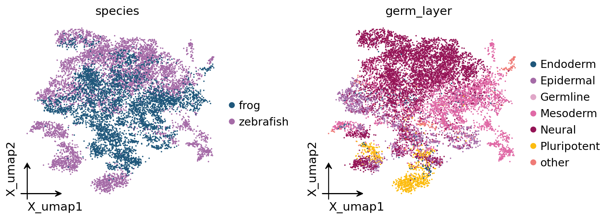
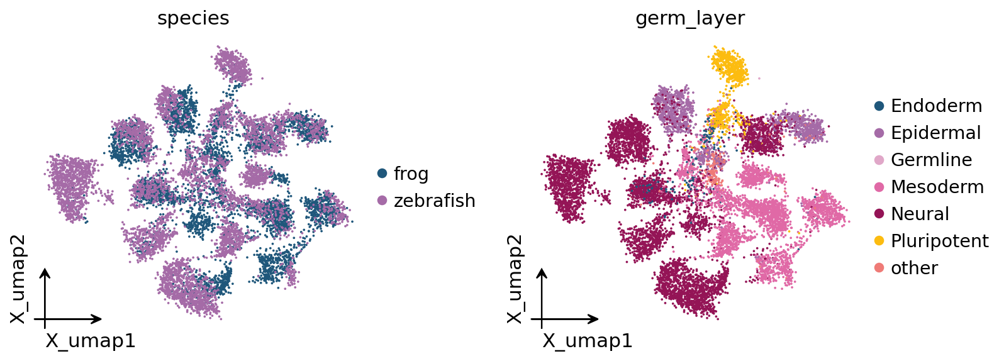
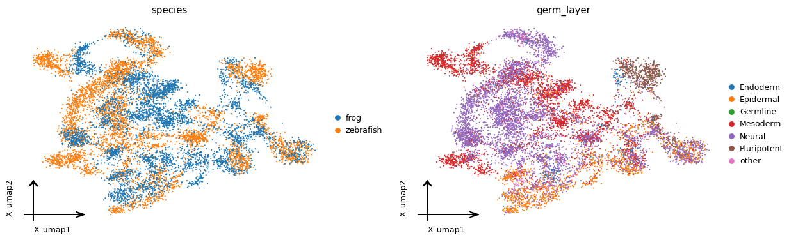

Cross-species integration via orthologs#
Single-cell datasets from different species live in different gene-symbol spaces, so they cannot be integrated directly. omicverse bridges them with one-to-one orthologs from Ensembl BioMart, then reuses its existing integration backends to align the datasets across species (issue #856).
Everything is in ov.single:
get_orthologs(source, target)— homologous-gene table from Ensembl BioMart.map_var_to_orthologs(adata, source, target)— transfer a dataset onto the other species’ gene symbols.cross_species_integrate([...], [...])— align to a reference species, keep the shared orthologs, and integrate.
We use the SATURN frog + zebrafish embryogenesis pair — two distant vertebrates (~430 Myr diverged). At that distance a linear correction (Harmony) is not enough, so we integrate with scVI. As we’ll see, one-to-one orthologs carry enough signal to align the major germ layers across species, but fine cell-type homology at this distance is where protein-embedding methods (SATURN) go further — we quantify exactly that below.
import omicverse as ov
import numpy as np
import pandas as pd
from sklearn.neighbors import KNeighborsClassifier
ov.plot_set()
🔬 Starting plot initialization...
🧬 Detecting GPU devices…
✅ NVIDIA CUDA GPUs detected: 1
• [CUDA 0] NVIDIA H100 80GB HBM3
Memory: 79.1 GB | Compute: 9.0
____ _ _ __
/ __ \____ ___ (_)___| | / /__ _____________
/ / / / __ `__ \/ / ___/ | / / _ \/ ___/ ___/ _ \
/ /_/ / / / / / / / /__ | |/ / __/ / (__ ) __/
\____/_/ /_/ /_/_/\___/ |___/\___/_/ /____/\___/
🔖 Version: 2.2.1rc1 📚 Tutorials: https://omicverse.readthedocs.io/
✅ plot_set complete.
1. Load the SATURN frog + zebrafish data#
ov.datasets.saturn_frog_zebrafish() returns two AnnData objects with raw
counts, species-native gene symbols, and SATURN’s harmonized cell_type /
germ_layer labels — small sparse conversions of SATURN’s official sources
(Briggs et al. 2018 Xenopus; Wagner et al. 2018 zebrafish).
frog, zebrafish = ov.datasets.saturn_frog_zebrafish()
shared = sorted(set(frog.obs['cell_type']) & set(zebrafish.obs['cell_type']))
print('frog :', frog.shape)
print('zebrafish:', zebrafish.shape)
print(f'shared harmonized cell types: {len(shared)}')
🔍 Downloading data to ./data/frog_saturn.h5ad
⚠️ File ./data/frog_saturn.h5ad already exists
🔍 Downloading data to ./data/zebrafish_saturn.h5ad
⚠️ File ./data/zebrafish_saturn.h5ad already exists
frog : (4837, 22382)
zebrafish: (5983, 16950)
shared harmonized cell types: 28
2. Homologous-gene transfer (Ensembl BioMart)#
ortho = ov.single.get_orthologs('zebrafish', 'frog') # danio -> xenopus
print('one-to-one zebrafish->frog orthologs:', len(ortho))
ortho.head()
one-to-one zebrafish->frog orthologs: 9253
| source_symbol | target_symbol | orthology_type | |
|---|---|---|---|
| 0 | tmem177 | tmem177 | ortholog_one2one |
| 1 | ostc | ostc | ortholog_one2one |
| 2 | rab9b | rab9b | ortholog_one2one |
| 3 | slc39a9 | slc39a9 | ortholog_one2one |
| 4 | gpkow | gpkow | ortholog_one2one |
3. Cross-species integration with scVI#
cross_species_integrate maps both datasets onto the reference species’
one-to-one orthologs, keeps the shared genes, adds a species batch label, and
runs the backend. For these distant species we use scVI (raw counts, NB
likelihood).
adata = ov.single.cross_species_integrate(
[zebrafish, frog], ['zebrafish', 'frog'],
ref_species='zebrafish', method='scVI',
n_top_genes=2000, n_pcs=30)
adata.uns['cross_species']
...Begin using scVI to correct batch effect
╭─ SUMMARY: batch_correction ────────────────────────────────────────╮
│ Duration: 181.9187s │
│ Shape: 10,820 x 2,000 (Unchanged) │
│ │
│ CHANGES DETECTED │
│ ──────────────── │
│ ● OBS │ ✚ _scvi_batch (int) │
│ │ ✚ _scvi_labels (int) │
│ │
│ ● UNS │ ✚ REFERENCE_MANU │
│ │ ✚ _ov_provenance │
│ │ ✚ _scvi_manager_uuid │
│ │ ✚ _scvi_uuid │
│ │
│ ● OBSM │ ✚ X_scVI (array, 10820x10) │
│ │
╰────────────────────────────────────────────────────────────────────╯
{'ref_species': 'zebrafish',
'species': ['zebrafish', 'frog'],
'n_common_orthologs': 5603,
'orthology_type': 'one2one',
'method': 'scVI'}
4. Visualise#
Embed on the scVI representation and colour by species and by germ layer.
ov.pp.neighbors(adata, use_rep='X_scVI', n_neighbors=15)
ov.pp.umap(adata)
ov.pl.embedding(adata, basis='X_umap', color=['species', 'germ_layer'],
frameon='small', wspace=0.5)
🖥️ Using Scanpy CPU to calculate neighbors...
🔍 K-Nearest Neighbors Graph Construction:
Mode: cpu
Neighbors: 15
Method: umap
Metric: euclidean
Representation: X_scVI
🔍 Computing neighbor distances...
🔍 Computing connectivity matrix...
💡 Using UMAP-style connectivity
✓ Graph is fully connected
✅ KNN Graph Construction Completed Successfully!
✓ Processed: 10,820 cells with 15 neighbors each
✓ Results added to AnnData object:
• 'neighbors': Neighbors metadata (adata.uns)
• 'distances': Distance matrix (adata.obsp)
• 'connectivities': Connectivity matrix (adata.obsp)
╭─ SUMMARY: neighbors ───────────────────────────────────────────────╮
│ Duration: 23.741s │
│ Shape: 10,820 x 2,000 (Unchanged) │
│ │
│ CHANGES DETECTED │
│ ──────────────── │
│ ● UNS │ ✚ neighbors │
│ │ └─ params: {'n_neighbors': 15, 'method': 'umap', 'random_s...│
│ │
│ ● OBSP │ ✚ connectivities (sparse matrix, 10820x10820) │
│ │ ✚ distances (sparse matrix, 10820x10820) │
│ │
╰────────────────────────────────────────────────────────────────────╯
🔍 [2026-07-21 02:25:56] Running UMAP in 'cpu' mode...
🖥️ Using Scanpy CPU UMAP...
🔍 UMAP Dimensionality Reduction:
Mode: cpu
Method: umap
Components: 2
Min distance: 0.5
{'n_neighbors': 15, 'method': 'umap', 'random_state': 0, 'metric': 'euclidean', 'use_rep': 'X_scVI'}
🔍 Computing UMAP parameters...
🔍 Computing UMAP embedding (classic method)...
✅ UMAP Dimensionality Reduction Completed Successfully!
✓ Embedding shape: 10,820 cells × 2 dimensions
✓ Results added to AnnData object:
• 'X_umap': UMAP coordinates (adata.obsm)
• 'umap': UMAP parameters (adata.uns)
✅ UMAP completed successfully.
╭─ SUMMARY: umap ────────────────────────────────────────────────────╮
│ Duration: 1.8922s │
│ Shape: 10,820 x 2,000 (Unchanged) │
│ │
│ CHANGES DETECTED │
│ ──────────────── │
│ ● UNS │ ✚ umap │
│ │ └─ params: {'a': np.float64(0.5830300203414425), 'b': np.f...│
│ │
│ ● OBSM │ ✚ X_umap (array, 10820x2) │
│ │
╰────────────────────────────────────────────────────────────────────╯
{kind=link}

5. Evaluate — cell-type consistency, not just species mixing#
A cluster containing both species is not proof of good integration: an over-aggressive method can blend everything and still look “mixed”. The honest test is whether homologous cell types align across species. We measure it as cross-species label transfer: train a kNN classifier on zebrafish labels in the embedding, predict the frog cells, and compare to their true labels — before (raw ortholog PCA) vs after scVI, at germ-layer and fine cell-type resolution.
def xspecies_transfer(rep, label):
m = adata.obsm[rep]
sp = adata.obs['species'].values
y = adata.obs[label].astype(str).values
shared = (set(y[sp == 'zebrafish']) & set(y[sp == 'frog'])) - {'other'}
tr = (sp == 'zebrafish') & np.isin(y, list(shared))
te = (sp == 'frog') & np.isin(y, list(shared))
knn = KNeighborsClassifier(n_neighbors=15).fit(m[tr], y[tr])
return (knn.predict(m[te]) == y[te]).mean(), len(shared)
for label in ['germ_layer', 'cell_type']:
a_pre, n = xspecies_transfer('X_pca', label)
a_post, _ = xspecies_transfer('X_scVI', label)
print(f'{label:11s} ({n:2d} classes, chance~{1/n:.2f}): '
f'before={a_pre:.2f} after scVI={a_post:.2f}')
germ_layer ( 6 classes, chance~0.17): before=0.54 after scVI=0.57
cell_type (28 classes, chance~0.04): before=0.22 after scVI=0.23
Beyond one-to-one orthologs: SAMap & SATURN#
The ortholog route above only uses one-to-one orthologs, which lose
resolution at large evolutionary distances. The same
cross_species_integrate / CrossSpecies entry point reaches two homology-aware
backends (vendored under omicverse.external) — just change method=. Both need
protein data (BLAST proteomes / ESM embeddings), so they are heavier; we run them
in full below.
First, a cell_type → germ_layer lookup (from the loaded data) to colour the
results consistently:
c2g = dict(zip(
pd.concat([zebrafish.obs['cell_type'], frog.obs['cell_type']]).astype(str),
pd.concat([zebrafish.obs['germ_layer'], frog.obs['germ_layer']]).astype(str)))
SAMap — reciprocal-BLAST homology graph#
build_blast_maps defaults to DIAMOND (~40-50× faster than NCBI blastp —
reciprocal frog↔zebrafish maps in ~1 min, both directions concurrent). Then
method='samap' builds the gene-homology graph and runs the Self-Assembling
Manifold.
# download the two Ensembl peptide proteomes (SAMap's BLAST inputs)
zf_fa = ov.datasets.download_data('https://github.com/omicverse/omicverse-tutorials/releases/download/data-saturn-fz/Danio_rerio.GRCz11.pep.all.fa.gz',
file_path='zf.pep.fa.gz', dir='data')
fr_fa = ov.datasets.download_data('https://github.com/omicverse/omicverse-tutorials/releases/download/data-saturn-fz/Xenopus_tropicalis.UCB_Xtro_10.0.pep.all.fa.gz',
file_path='fr.pep.fa.gz', dir='data')
from omicverse.external.samap._run import build_blast_maps
build_blast_maps({'zf': zf_fa, 'fr': fr_fa}, out_dir='data/maps',
engine='diamond', threads=8)
adata_samap = ov.single.cross_species_integrate(
[zebrafish, frog], ['zebrafish', 'frog'], method='samap', ids=['zf', 'fr'],
proteomes={'zf': zf_fa, 'fr': fr_fa}, blast_maps='data/maps')
🔍 Downloading data to data/zf.pep.fa.gz
✅ Download completed
🔍 Downloading data to data/fr.pep.fa.gz
✅ Download completed
RUNNING SAM
Iteration: 0, Convergence: 1.0
Iteration: 1, Convergence: 0.7719659592448425
Iteration: 2, Convergence: 0.011843688487187424
Computing the UMAP embedding...
Elapsed time: 56.13556671142578 seconds
RUNNING SAM
Iteration: 0, Convergence: 1.0
Iteration: 1, Convergence: 0.8615980454676063
Iteration: 2, Convergence: 0.013702780629509291
Computing the UMAP embedding...
Elapsed time: 40.30157160758972 seconds
Not updating the manifold...
Not updating the manifold...
13675 `zf` gene symbols match between the datasets and the BLAST graph.
9293 `fr` gene symbols match between the datasets and the BLAST graph.
Prepping datasets for translation.
Translating feature spaces pairwise.
Projecting data into joint latent space. 1.6057941913604736
Correcting data with means. 2.242494583129883
Expanding neighbourhoods of species zf...
Expanding neighbourhoods of species fr...
Indegree coarsening
0/1 (0, 10820)
Rescaling edge weights by expression correlations.
Concatenating SAM objects...
Iteration 1 complete.
Alignment scores:
fr zf
fr 0.000000 0.66945
zf 0.658974 0.00000
Calculating gene-gene correlations in the homology graph...
Prepping datasets for translation.
Translating feature spaces pairwise.
Projecting data into joint latent space. 1.4618206024169922
Correcting data with means. 1.6808748245239258
Expanding neighbourhoods of species zf...
Expanding neighbourhoods of species fr...
Indegree coarsening
0/1 (0, 10820)
Rescaling edge weights by expression correlations.
Concatenating SAM objects...
Iteration 2 complete.
Alignment scores:
fr zf
fr 0.000000 0.68854
zf 0.686386 0.00000
Calculating gene-gene correlations in the homology graph...
Prepping datasets for translation.
Translating feature spaces pairwise.
Projecting data into joint latent space. 1.3997087478637695
Correcting data with means. 1.8589227199554443
Expanding neighbourhoods of species zf...
Expanding neighbourhoods of species fr...
Indegree coarsening
0/1 (0, 10820)
Rescaling edge weights by expression correlations.
Concatenating SAM objects...
Iteration 3 complete.
Alignment scores:
fr zf
fr 0.000000 0.690466
zf 0.686793 0.000000
Running UMAP on the stitched manifolds.
Elapsed time: 1.3494000991185506 minutes.
sp = adata_samap.obs['species'].astype(str)
adata_samap.obs['species'] = np.where(sp == 'zf', 'zebrafish', 'frog')
ct = np.where(sp == 'zf', adata_samap.obs.get('zf_cell_type').astype(str),
adata_samap.obs.get('fr_cell_type').astype(str))
adata_samap.obs['cell_type'] = ct
adata_samap.obs['germ_layer'] = [c2g.get(x, 'other') for x in ct]
ov.pl.embedding(adata_samap, basis='X_umap', color=['species', 'germ_layer'],
frameon='small', wspace=0.5)
{kind=link}
SATURN — ESM2 protein-embedding macrogenes#
SATURN needs an ESM2 protein embedding per species (a torch dict
{gene_symbol: vector}; generating it over each proteome is the expensive step,
so we download precomputed ones). We use the CrossSpecies class so the
trained model comes back and the whole run can be persisted with ov.io.save.
zf_emb = ov.datasets.download_data('https://github.com/omicverse/omicverse-tutorials/releases/download/data-saturn-fz/zebrafish_esm.pt',
file_path='zebrafish_esm.pt', dir='data')
fr_emb = ov.datasets.download_data('https://github.com/omicverse/omicverse-tutorials/releases/download/data-saturn-fz/frog_esm.pt',
file_path='frog_esm.pt', dir='data')
cs = ov.single.CrossSpecies(
[zebrafish, frog], ['zebrafish', 'frog'], method='saturn',
embedding_paths={'zebrafish': zf_emb, 'frog': fr_emb},
in_label_col='cell_type', n_macrogenes=2000, epochs=(50, 50),
device='cuda', work_dir='data/saturn_work').fit()
ov.io.save(cs, 'data/saturn_run.pkl') # persist run + trained model (cs.model)
adata_saturn = cs.adata
🔍 Downloading data to data/zebrafish_esm.pt
✅ Download completed
🔍 Downloading data to data/frog_esm.pt
✅ Download completed
Making Centroids
Pretraining...
Epoch 1 Iteration 0: Loss = 0.09603258967399597, Number of mined triplets = 43174
Epoch 2 Iteration 0: Loss = 0.09925156086683273, Number of mined triplets = 101125
Epoch 3 Iteration 0: Loss = 0.09765970706939697, Number of mined triplets = 83504
Epoch 4 Iteration 0: Loss = 0.09881211817264557, Number of mined triplets = 80102
Epoch 5 Iteration 0: Loss = 0.10039504617452621, Number of mined triplets = 78362
Epoch 6 Iteration 0: Loss = 0.10108848661184311, Number of mined triplets = 68680
Epoch 7 Iteration 0: Loss = 0.09945608675479889, Number of mined triplets = 75729
Epoch 8 Iteration 0: Loss = 0.10081201791763306, Number of mined triplets = 75181
Epoch 9 Iteration 0: Loss = 0.10060328245162964, Number of mined triplets = 71803
Epoch 10 Iteration 0: Loss = 0.10041692852973938, Number of mined triplets = 70050
Epoch 11 Iteration 0: Loss = 0.1018919125199318, Number of mined triplets = 72677
Epoch 12 Iteration 0: Loss = 0.1009477972984314, Number of mined triplets = 69245
Epoch 13 Iteration 0: Loss = 0.09966017305850983, Number of mined triplets = 68312
Epoch 14 Iteration 0: Loss = 0.10005154460668564, Number of mined triplets = 75692
Epoch 15 Iteration 0: Loss = 0.09952666610479355, Number of mined triplets = 71752
Epoch 16 Iteration 0: Loss = 0.09766639769077301, Number of mined triplets = 67852
Epoch 17 Iteration 0: Loss = 0.09757161140441895, Number of mined triplets = 79504
Epoch 18 Iteration 0: Loss = 0.09686289727687836, Number of mined triplets = 69247
Epoch 19 Iteration 0: Loss = 0.09461402893066406, Number of mined triplets = 70251
Epoch 20 Iteration 0: Loss = 0.0933929905295372, Number of mined triplets = 72754
Epoch 21 Iteration 0: Loss = 0.09289083629846573, Number of mined triplets = 66344
Epoch 22 Iteration 0: Loss = 0.0919264405965805, Number of mined triplets = 70006
Epoch 23 Iteration 0: Loss = 0.0918150395154953, Number of mined triplets = 58352
Epoch 24 Iteration 0: Loss = 0.09187998622655869, Number of mined triplets = 63106
Epoch 25 Iteration 0: Loss = 0.09075331687927246, Number of mined triplets = 57606
Epoch 26 Iteration 0: Loss = 0.0931394174695015, Number of mined triplets = 55456
Epoch 27 Iteration 0: Loss = 0.08965802192687988, Number of mined triplets = 53121
Epoch 28 Iteration 0: Loss = 0.09136085212230682, Number of mined triplets = 49773
Epoch 29 Iteration 0: Loss = 0.09142591059207916, Number of mined triplets = 48875
Epoch 30 Iteration 0: Loss = 0.09042338281869888, Number of mined triplets = 45847
Epoch 31 Iteration 0: Loss = 0.09139881283044815, Number of mined triplets = 43363
Epoch 32 Iteration 0: Loss = 0.08972431719303131, Number of mined triplets = 41849
Epoch 33 Iteration 0: Loss = 0.08848181366920471, Number of mined triplets = 46087
Epoch 34 Iteration 0: Loss = 0.08937867730855942, Number of mined triplets = 38569
Epoch 35 Iteration 0: Loss = 0.08921033889055252, Number of mined triplets = 37928
Epoch 36 Iteration 0: Loss = 0.0882178470492363, Number of mined triplets = 35068
Epoch 37 Iteration 0: Loss = 0.08737283200025558, Number of mined triplets = 34813
Epoch 38 Iteration 0: Loss = 0.08828604966402054, Number of mined triplets = 31798
Epoch 39 Iteration 0: Loss = 0.08446776121854782, Number of mined triplets = 33283
Epoch 40 Iteration 0: Loss = 0.0857497826218605, Number of mined triplets = 31566
Epoch 41 Iteration 0: Loss = 0.08825366199016571, Number of mined triplets = 28311
Epoch 42 Iteration 0: Loss = 0.08621831983327866, Number of mined triplets = 26539
Epoch 43 Iteration 0: Loss = 0.08692121505737305, Number of mined triplets = 23992
Epoch 44 Iteration 0: Loss = 0.08732714504003525, Number of mined triplets = 22892
Epoch 45 Iteration 0: Loss = 0.08400732278823853, Number of mined triplets = 21913
Epoch 46 Iteration 0: Loss = 0.08676427602767944, Number of mined triplets = 18906
Epoch 47 Iteration 0: Loss = 0.08499752730131149, Number of mined triplets = 18366
Epoch 48 Iteration 0: Loss = 0.08478585630655289, Number of mined triplets = 17472
Epoch 49 Iteration 0: Loss = 0.08621685951948166, Number of mined triplets = 16630
Epoch 50 Iteration 0: Loss = 0.08363808691501617, Number of mined triplets = 16405
💾 Save Operation:
Target path: data/saturn_run.pkl
Object type: CrossSpecies
Using: pickle
✅ Successfully saved!
────────────────────────────────────────────────────────────
adata_saturn.obs['cell_type'] = adata_saturn.obs['labels2'].astype(str)
adata_saturn.obs['germ_layer'] = [c2g.get(x, 'other') for x in adata_saturn.obs['cell_type']]
ov.pp.neighbors(adata_saturn, use_rep='X_saturn', n_neighbors=15)
ov.pp.umap(adata_saturn)
ov.pl.embedding(adata_saturn, basis='X_umap', color=['species', 'germ_layer'],
frameon='small', wspace=0.5)
🖥️ Using Scanpy CPU to calculate neighbors...
🔍 K-Nearest Neighbors Graph Construction:
Mode: cpu
Neighbors: 15
Method: umap
Metric: euclidean
Representation: X_saturn
🔍 Computing neighbor distances...
🔍 Computing connectivity matrix...
💡 Using UMAP-style connectivity
✓ Graph is fully connected
✅ KNN Graph Construction Completed Successfully!
✓ Processed: 10,820 cells with 15 neighbors each
✓ Results added to AnnData object:
• 'neighbors': Neighbors metadata (adata.uns)
• 'distances': Distance matrix (adata.obsp)
• 'connectivities': Connectivity matrix (adata.obsp)
╭─ SUMMARY: neighbors ───────────────────────────────────────────────╮
│ Duration: 2.8541s │
│ Shape: 10,820 x 256 (Unchanged) │
│ │
│ CHANGES DETECTED │
│ ──────────────── │
│ ● UNS │ ✚ REFERENCE_MANU │
│ │ ✚ _ov_provenance │
│ │ ✚ neighbors │
│ │ └─ params: {'n_neighbors': 15, 'method': 'umap', 'random_s...│
│ │
│ ● OBSP │ ✚ connectivities (sparse matrix, 10820x10820) │
│ │ ✚ distances (sparse matrix, 10820x10820) │
│ │
╰────────────────────────────────────────────────────────────────────╯
🔍 [2026-07-21 02:44:04] Running UMAP in 'cpu' mode...
🖥️ Using Scanpy CPU UMAP...
🔍 UMAP Dimensionality Reduction:
Mode: cpu
Method: umap
Components: 2
Min distance: 0.5
{'n_neighbors': 15, 'method': 'umap', 'random_state': 0, 'metric': 'euclidean', 'use_rep': 'X_saturn'}
🔍 Computing UMAP parameters...
🔍 Computing UMAP embedding (classic method)...
✅ UMAP Dimensionality Reduction Completed Successfully!
✓ Embedding shape: 10,820 cells × 2 dimensions
✓ Results added to AnnData object:
• 'X_umap': UMAP coordinates (adata.obsm)
• 'umap': UMAP parameters (adata.uns)
✅ UMAP completed successfully.
╭─ SUMMARY: umap ────────────────────────────────────────────────────╮
│ Duration: 17.3013s │
│ Shape: 10,820 x 256 (Unchanged) │
│ │
│ CHANGES DETECTED │
│ ──────────────── │
│ ● UNS │ ✚ umap │
│ │ └─ params: {'a': np.float64(0.5830300203414425), 'b': np.f...│
│ │
│ ● OBSM │ ✚ X_umap (array, 10820x2) │
│ │
╰────────────────────────────────────────────────────────────────────╯
{kind=link}

CAMEX — heterogeneous GNN over a many-to-many homology graph#
CAMEX doesn’t need protein data: it builds the many-to-many homolog graph
(from BioMart, automatically) and runs a graph neural network. Unlike SAMap /
SATURN it natively integrates >2 species in one call and does annotation
transfer. Here it runs in-process (GPU); with method='camex' the many-to-many
homology is fetched for you.
adata_camex = ov.single.cross_species_integrate(
[zebrafish, frog], ['zebrafish', 'frog'], method='camex',
epoch_integration=100, device='cuda') # >2 species: just pass more adatas
ov.pp.neighbors(adata_camex, use_rep='X_CAMEX_Integration', n_neighbors=15)
ov.pp.umap(adata_camex)
ov.pl.embedding(adata_camex, basis='X_umap', color=['species', 'germ_layer'],
frameon='small', wspace=0.5)

Which method, and how well do they align cell types?#
Species mixing alone is misleading, so we score cross-species cell-type label transfer (train a kNN on zebrafish labels in each method’s embedding, predict the frog cells) at germ-layer and fine cell-type resolution.
from sklearn.neighbors import KNeighborsClassifier
def xtransfer(a, rep, label):
m = a.obsm[rep]; sp = a.obs['species'].astype(str).values
y = a.obs[label].astype(str).values
shared = (set(y[sp=='zebrafish']) & set(y[sp=='frog'])) - {'other','nan','None'}
tr = (sp=='zebrafish') & np.isin(y, list(shared))
te = (sp=='frog') & np.isin(y, list(shared))
knn = KNeighborsClassifier(n_neighbors=15).fit(m[tr], y[tr])
return (knn.predict(m[te]) == y[te]).mean()
print(f"{'method':16s} germ-layer cell-type")
for name, a, rep in [('orthologs+scVI', adata, 'X_scVI'),
('SAMap', adata_samap, 'X_umap'),
('SATURN', adata_saturn, 'X_saturn'),
('CAMEX', adata_camex, 'X_CAMEX_Integration')]:
g = xtransfer(a, rep, 'germ_layer'); ct = xtransfer(a, rep, 'cell_type')
print(f"{name:16s} {g:.2f} {ct:.2f}")
method germ-layer cell-type
orthologs+scVI 0.57 0.23
SAMap 0.68 0.41
SATURN 0.86 0.62
CAMEX 0.55 0.24
Summary#
One entry point, four methods via method= (CrossSpecies / cross_species_integrate):
|
approach |
homology signal |
|---|---|---|
|
one-to-one orthologs + |
BioMart |
|
SAMap reciprocal-BLAST homology graph |
proteomes / BLAST |
|
SATURN ESM2 macrogenes |
ESM2 embeddings |
|
CAMEX heterogeneous GNN (multi-species, >2) |
many-to-many homology (BioMart) |
The deeper the homology signal a method uses (one-to-one orthologs → BLAST graph → protein embeddings), the better fine cell types align across distant species — at increasing input/compute cost (see the table above).
ov.single.cross_species_integrate(..., method=...)— one call, returns the AnnData.ov.single.CrossSpecies(...).fit()— the class; keeps.adata+.model, andov.io.savepersists the run.ov.tl.cross_species_align— the ortholog preprocessing on its own.